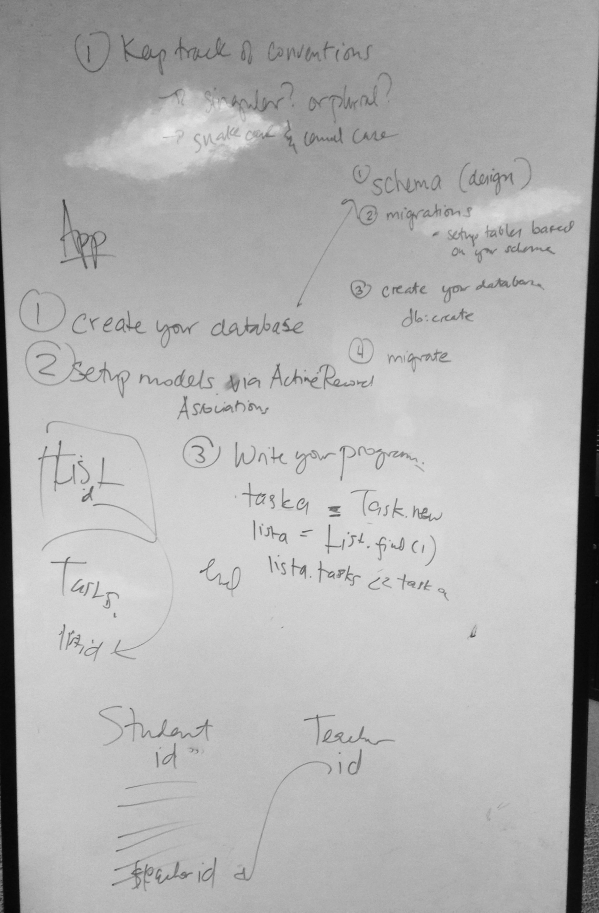

Active Record
Today was the first time we worked with a framework. It wasn't quite Sinatra and definitely wasn't Rails, but it was tough for many of us who haven't seen Active Record nonetheless. We were able to go through Ruby with

Today was the first time we worked with a framework. It wasn't quite Sinatra and definitely wasn't Rails, but it was tough for many of us who haven't seen Active Record nonetheless. We were able to go through Ruby with
ORM stands for Object Relational Mapping, a technique for converting data between two systems. In our context, we are converting tables in an RDBMS(SQLite) to classes in Ruby. The image above gives a concise representation of what we learned, but here's the rundown for people who like to read.
Active Record is one example of ORM. In our context, it manages the back-end of our application and links the database tables to models.
We were able to have a coach come in the afternoon to talk about an Active Record workflow as we design the back-end of an application. This is what she said.
Where your Models, Views, and Controllers go.
Where your data and migrate files are located. Migrate allows you to update and change your database tables and schema with db:migrate while data stores csv files that contain the actual user data.
Where your rspecs are found.
Where all the gems that are required for the application are stored. When you run bundle, the gems in this file are all installed locally so that you can use the application.
A series of commands that you have created that work upon your entire application directory.
Makes the database file.
Makes the table and schema according to your migrate files.
Rolls back the database to the previous migrate file.
Drops your tables.